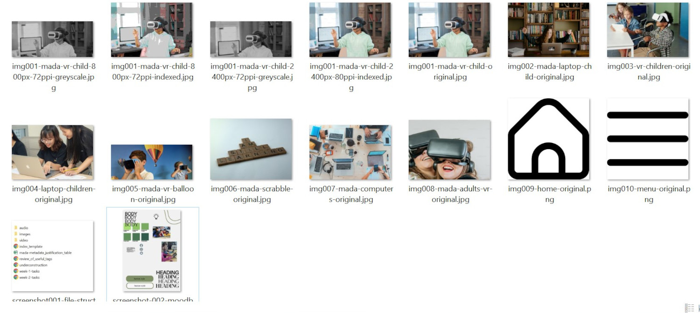

IL Tasks
Task 1: Explore the Creative Process
In general I would not describe myself as a very creative person, and therefore some of the tasks have been difficult for me at times. However I have enjoyed learning about the deeper reasons for web design and how much they can impact the appeal of the information.
Task 2: Analyse Images
- What are the images used for?
- - The images are used mainly for advertising and aesthetics. For example, they have used an image for the background of the title with the colours black, purple and blue, which align with the websites overall aesthetic and fit the 'science' vibe.
- - Screengrabs of scenes from games are used to appeal to the used to click and play the game. These also enhance the textual information given about the game, as a use may be less likely to be interested in playing the game when just looking at the text.
- What kinds of images are used?
- - The images used are raster images. When opened in a new tab, they are pixelated when zoomed in on and when trying to save them they automatically save as .png.
- What are the images used for?
- - The images are used mainly to enhance and appeal. Simiralarly to the Science Museum, the use of images accompanys text. The information provides a brief description of the resource. As well as real life photographs, the website makes use of icons.
- What kinds of images are used?
- - Raster images are used.
Task 3: Incorporate Images into Moodboard
Task 4: Generate Porfolio


Lab Tasks
Task 1: Image Optimisation
- Image 1 is greyscale, image size 800px, 72ppi resolution, cropped to a selection and a turned down brightness. I rate this one a 3. The greyscale gives the image depth, I have used this on my index page as the header image and it allows for text to stand out in front of it. The cropped selection gives enough of the image for a user to understand what the rest of it would be, it has not taken away from the image. However, the quality of the image is not great for what I want to use it for.
- Image 2 is the same, however the image size is 2400px, rather than 800px. While the previous image size still looks good, the quality has reduced, and was not ideal for my use of it as a header, as the image will be blown up at a larger scale. After some research, I found that 2600x1600px is better quality for full-size images. This is evident as the header on my index page is now much clearer from using this image. I rate the image a 1, as it optimises my website while meeting the users needs.
- Image 3 has been indexed to a web-optimised colour palette. This has changed the image drastically and does not suit my website. This image may suit something else but I do not think my audience would enjoy or understand why it has been made cartoon-like. For that reason I rate this image a 5.
- Image 4 has been indexed to an optimum generated colour palette. The image size has been scaled to 2400px, and it is 80ppi. At first glance, the indexed photograph appears normal however when zoomed in you can see the colours have been blended together. I would not rate this photo as ideal for my website, however, it is useable when compared to image 3. I rate it a 3.
Task 2: File Format
I have organised my screenshots and images in my 'Master Files' file, where I have named them appropriately. I am numbering them, and ensuring that I create a divide between images and screenshots. The file names are informative, meaning anyone who was viewing it should be able to understand it to an extent.
Task 3: Reflection
This task has been useful for my website as I now understand the ways to optimise images for the web. While doing the essential reading, and some of my own research, I have discovered how important it is to have images that are optimised for the web. Research from Google (2018) found that the number of seconds a page takes to load has a huge effect on how likely the user is to bounce off of it and leave the website entirely. Therefore, I will ensure that my images are compressed and optimised to ensure a user would not leave my website. As I have discussed, my main audience is teachers who have busy lives and will want to read without waiting for a page to load.